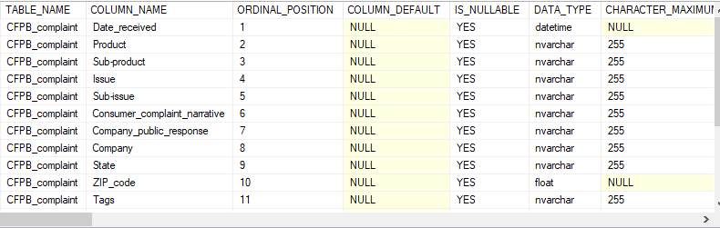

Consumer Financial Protection Bureau
Complaints that the CFPB sends to companies for response are published in the Consumer Complaint Database after the company responds, confirming a commercial relationship with the consumer, or after 15 days, whichever comes first.
Ask:
The first step is to determine what informaiton is needed.
I'll analyse the complaints information to determine:
Prepare:
This dataset was downloaded from the CFPB website as a CSV file.
It encompasses complaints from years 2020 - 2021.
You can access the dataset by clicking on this link: CFPB
I imported the CSV file into SQLServer to clean and analyse the data.
Process:
I first wanted to check how many columns were in the dataset and their information:
-- To check columns information
SELECT
*
FROM
INFORMATION_SCHEMA.COLUMNS
WHERE
table_name = 'CFPB_complaint'I found there were 18 columns in the dataset and they were datetime, nvarchar & float data type.

I chose to delete the columns I wouldn't use:
-- To delete columns I wouldn't use
ALTER TABLE
CFPB_complaint
DROP COLUMN
consumer_complaint_narrative,
company_public_response,
tags,
consumer_consent_provided,
date_sent_to_company,
company_response_to_consumer,
consumer_disputed,
complaint_idAnalyse:
I analyzed the dataset in SQLServer:
--To check how many complaints were submitted
SELECT
COUNT(Date_received) AS Num_complaint
FROM
CFPB_complaint
--To check top 5 products with most complaints
SELECT
TOP 5
Product,
COUNT(Date_received) AS Num_complaints
FROM
CFPB_complaint
GROUP BY
Product
ORDER BY
Num_complaints DESC
--To check top 5 sub-products with most complaints
SELECT
TOP 5
[Sub-product],
COUNT(Date_received) AS Num_complaints
FROM
CFPB_complaint
GROUP BY
[Sub-product]
ORDER BY
Num_complaints DESC
--To check top 5 companies with most complaints
SELECT
TOP 5
Company,
COUNT(Date_received) AS Num_complaints
FROM
CFPB_complaint
GROUP BY
Company
ORDER BY
Num_complaints DESC
--To check top 3 methods to submit complaints
SELECT
TOP 3
Submitted_via,
COUNT(Date_received) AS Num_complaints
FROM
CFPB_complaint
GROUP BY
Submitted_via
ORDER BY
Num_complaints DESC
Share:
I saved the dataset into a CSV file and imported the data into Tableau.
Insights:
Debt collection: 124283
Credit card or prepaid card: 65708
General-purpose credit card or charge card: 47798
Checking account: 43536
TRANSUNION INTERMEDIATE HOLDINGS, INC.: 151089
Experian Information Solutions Inc.: 130203
Phone: 37020
Referral: 36127
You can utilize the interactive Tableau dashboard here: